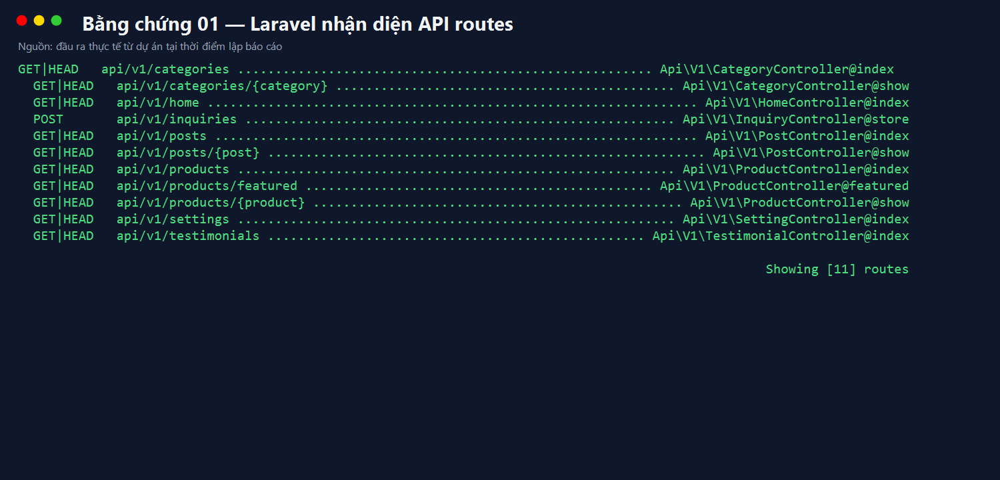
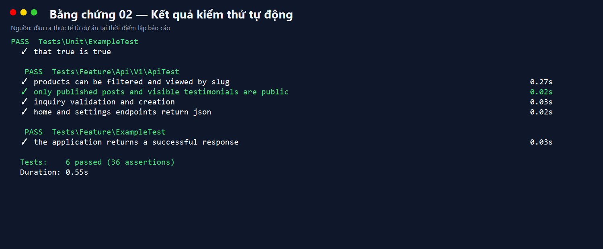
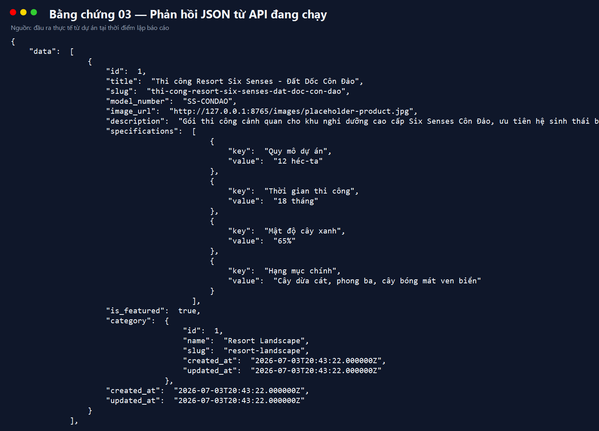

Laravel 11 — RESTful API phiên bản v1
Ngày lập báo cáo: 04/07/2026
Mục tiêu là xây dựng lớp API công khai cho website IronForge Machinery mà không thay đổi đáng kể luồng web và trang quản trị hiện có. API phục vụ frontend, ứng dụng di động hoặc hệ thống bên thứ ba.
App\Http\Controllers\Api\V1.Dự án sử dụng PHP 8.2+, Laravel 11, Eloquent ORM và PHPUnit 11. API được phiên bản hóa để có thể mở rộng mà không phá vỡ client đang sử dụng.
routes/api.php: khai báo 11 endpoint.app/Http/Controllers/Api/V1: truy vấn, lọc, phân trang.app/Http/Resources/Api/V1: định dạng JSON nhất quán.bootstrap/app.php: đăng ký API routes trong Laravel 11.tests/Feature/Api/V1/ApiTest.php: kiểm thử tích hợp.| Method | Endpoint | Chức năng |
|---|---|---|
| GET | /api/v1/home | Dữ liệu tổng hợp trang chủ |
| GET | /api/v1/settings | Cấu hình công khai |
| GET | /api/v1/categories | Danh sách danh mục |
| GET | /api/v1/categories/{slug} | Chi tiết danh mục |
| GET | /api/v1/products | Danh sách, tìm kiếm, lọc sản phẩm |
| GET | /api/v1/products/featured | Sản phẩm nổi bật |
| GET | /api/v1/products/{slug} | Chi tiết sản phẩm |
| GET | /api/v1/posts | Bài viết đã xuất bản |
| GET | /api/v1/posts/{slug} | Chi tiết bài viết |
| GET | /api/v1/testimonials | Đánh giá đang hiển thị |
| POST | /api/v1/inquiries | Gửi yêu cầu tư vấn |
Các danh sách dùng paginator. per_page được giới hạn 1–100.
Sản phẩm hỗ trợ search, category,
featured; bài viết hỗ trợ search.
Endpoint chi tiết dùng slug. Laravel tự tìm bản ghi và trả HTTP 404 khi không tồn tại.
POST /inquiries tái sử dụng StoreInquiryRequest,
áp dụng throttle 30 request/phút và trả HTTP 201 khi tạo thành công.
API chỉ trả bài đã xuất bản, đánh giá đang hiển thị và nhóm setting cần cho giao diện.


Laravel được chạy cục bộ với database SQLite minh chứng riêng. Request
GET /api/v1/products?per_page=1 trả cấu trúc
data, links và meta.

php artisan migrate --seed php artisan serve php artisan test --filter=ApiTest Invoke-RestMethod http://127.0.0.1:8000/api/v1/products
Trong Postman, đặt base URL là
http://127.0.0.1:8000/api/v1. Với
POST /inquiries, gửi JSON gồm name,
phone, email và message.
API v1 được tích hợp theo hướng ít xâm lấn: không thay đổi schema dữ liệu, không sửa luồng web/admin và tái sử dụng model cùng validation hiện có. Kết quả kiểm thử xác nhận endpoint hoạt động đúng, dữ liệu công khai được kiểm soát và phản hồi có cấu trúc JSON nhất quán.